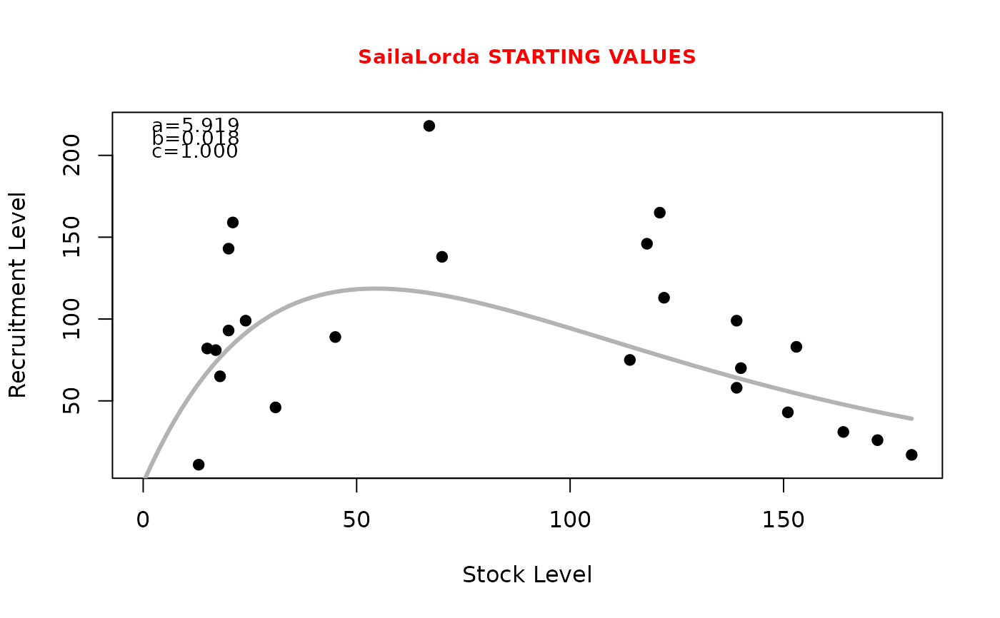
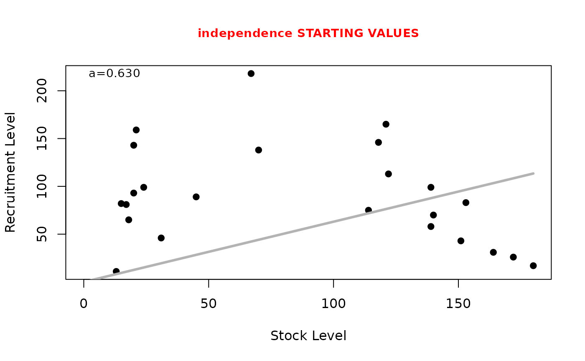

R/srStarts.R
srStarts.RdFinds reasonable starting values for parameters in specific parameterizations of the “Beverton-Holt”, “Ricker”, “Shepherd”, or “Saila-Lorda” stock-recruitment models. Use srFunShow() to see the equations of each model.
srStarts( formula, data = NULL, type = c("BevertonHolt", "Ricker", "Shepherd", "SailaLorda", "independence"), param = 1, fixed = NULL, plot = FALSE, col.mdl = "gray70", lwd.mdl = 3, lty.mdl = 1, cex.main = 0.9, col.main = "red", dynamicPlot = FALSE, ... )
| formula | A formula of the form |
|---|---|
| data | A data frame in which |
| type | A string that indicates the type of the stock-recruitment model. Must be one of |
| param | A numeric that indicates the parameterization of the stock-recruitment model type. This is ignored if |
| fixed | A named list that contains user-defined rather than automatically generated (i.e., fixed) starting values for one or more parameters. See details. |
| plot | A logical that indicates whether or not a plot of the data with the model fit at the starting values superimposed is created. |
| col.mdl | A color for the model when |
| lwd.mdl | A line width for the model when |
| lty.mdl | A line type for the model when |
| cex.main | A character expansion value for the main title when |
| col.main | A color for the main title when |
| dynamicPlot | DEPRECATED. |
| ... | Further arguments passed to the methods. |
A list that contains reasonable starting values. Note that the parameters will be listed in the same order and with the same names as listed in srFuns.
This function attempts to find reasonable starting values for a variety of parameterizations of the “Beverton-Holt”, “Ricker”, “Shepherd”, or “Saila-Lorda” stock-recruitment models. There is no guarantee that these starting values are the ‘best’ starting values. One should use them with caution and should perform sensitivity analyses to determine the impact of different starting values on the final model results.
Starting values for the first parameterization of the Beverton-Holt model were derived by linearizing the function (inverting both sides and simplifying), fitting a linear model to the observed data, and extracting parameter values from the corresponding linear model parameters. Starting values for the other parameterizations of the Beverton-Holt model were derived from known relationships between the parameters of each parameterization and the first parameterization. If the computed starting value for the Rp parameter was larger than the largest observed recruitment value, then the starting value for Rp was set to the largest observed recruitment value.
Starting values for the Shepherd function were the same as those for the first parameterization of the Beverton-Holt function with the addition that c=1.
Starting values for the Ricker parameterizations followed the same general procedure as described for the Beverton-Holt parameterizations. If the computed starting value for atilde was less than zero then the starting value was set to 0.00001.
Starting values for the Saila-Lorda function were the same as those for the first parameterization of the Ricker function with the addition that c=1.
13-Recruitment.
Ogle, D.H. 2016. Introductory Fisheries Analyses with R. Chapman & Hall/CRC, Boca Raton, FL.
Beverton, R.J.H. and S.J. Holt. 1957. On the dynamics of exploited fish populations, Fisheries Investigations (Series 2), volume 19. United Kingdom Ministry of Agriculture and Fisheries, 533 pp.
Iles, T.C. 1994. A review of stock-recruitment relationships with reference to flatfish populations. Netherlands Journal of Sea Research 32:399-420.
Quinn II, T.J. and R.B. Deriso. 1999. Quantitative Fish Dynamics. Oxford University Press.
Ricker, W.E. 1954. Stock and recruitment. Journal of the Fisheries Research Board of Canada 11:559-623.
Ricker, W.E. 1975. Computation and interpretation of biological statistics of fish populations. Technical Report Bulletin 191, Bulletin of the Fisheries Research Board of Canada. [Was (is?) from http://www.dfo-mpo.gc.ca/Library/1485.pdf.]
Shepherd, J. 1982. A versatile new stock-recruitment relationship for fisheries and construction of sustainable yield curves. Journal du Conseil International pour l'Exploration de la Mar 40:67-75.
See srFunShow and srFuns for related functionality. See nlsTracePlot for help troubleshooting nonlinear models that don't converge.
Derek H. Ogle, derek@derekogle.com
## Simple Examples srStarts(recruits~stock,data=CodNorwegian)#> $a #> [1] 6.040326 #> #> $b #> [1] 0.08789475 #>srStarts(recruits~stock,data=CodNorwegian,param=2)#> $a #> [1] 6.040326 #> #> $Rp #> [1] 68.72227 #>srStarts(recruits~stock,data=CodNorwegian,param=3)#> $a #> [1] 0.165554 #> #> $b #> [1] 0.01455132 #>srStarts(recruits~stock,data=CodNorwegian,param=4)#> $a #> [1] 0.165554 #> #> $Rp #> [1] 68.72227 #>srStarts(recruits~stock,data=CodNorwegian,type="Ricker")#> $a #> [1] 5.919256 #> #> $b #> [1] 0.01836117 #>srStarts(recruits~stock,data=CodNorwegian,type="Ricker",param=2)#> $a #> [1] 1.778211 #> #> $b #> [1] 0.01836117 #>srStarts(recruits~stock,data=CodNorwegian,type="Ricker",param=3)#> $a #> [1] 5.919256 #> #> $Rp #> [1] 118.5966 #>srStarts(recruits~stock,data=CodNorwegian,type="Shepherd")#> $a #> [1] 6.040326 #> #> $b #> [1] 0.08789475 #> #> $c #> [1] 1 #>srStarts(recruits~stock,data=CodNorwegian,type="SailaLorda")#> $a #> [1] 5.919256 #> #> $b #> [1] 0.01836117 #> #> $c #> [1] 1 #>srStarts(recruits~stock,data=CodNorwegian,type="independence")#> $a #> [1] 0.630291 #>## Simple Examples with a Plot srStarts(recruits~stock,data=CodNorwegian,type="Ricker",plot=TRUE)#> $a #> [1] 5.919256 #> #> $b #> [1] 0.01836117 #>srStarts(recruits~stock,data=CodNorwegian,type="BevertonHolt",plot=TRUE)#> $a #> [1] 6.040326 #> #> $b #> [1] 0.08789475 #>srStarts(recruits~stock,data=CodNorwegian,type="Shepherd",plot=TRUE)#> $a #> [1] 6.040326 #> #> $b #> [1] 0.08789475 #> #> $c #> [1] 1 #>srStarts(recruits~stock,data=CodNorwegian,type="SailaLorda",plot=TRUE)#> $a #> [1] 5.919256 #> #> $b #> [1] 0.01836117 #> #> $c #> [1] 1 #>srStarts(recruits~stock,data=CodNorwegian,type="independence",plot=TRUE)#> $a #> [1] 0.630291 #>## See examples in srFuns() for use of srStarts() when fitting stock-recruit models